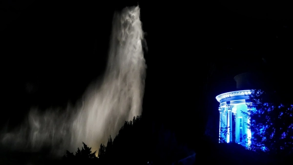

Start / Wasserspiele
Aaron Schiele
geprüft am 09.10.2026
geprüft am 09.10.2026
Ablauf: Uhrzeiten und Stationen
Jedes Wasserbild dauert etwa 10 Minuten, das ganze Schauspiel rund eineinhalb Stunden. Dazwischen bleibt gerade genug Zeit, um zur nächsten Station zu gehen.
- Kaskaden unterhalb des Herkules
- Steinhöfer Wasserfall
- Teufelsbrücke
- Aquädukt
- Große Fontäne (bis ca. 16 Uhr)
Wer den Anfang sehen will, ist um 14.30 Uhr oben am Herkules.
Route und Gefälle
Vom Herkules bis zum Schloss Wilhelmshöhe geht es zu Fuß und immer talwärts, das Rauschen des Wassers ist dabei dein Wegweiser.
Links und rechts der Kaskaden führen Treppen mit über 500 Stufen hinab, ganz ohne Geländer. Feste Schuhe und ein sicherer Tritt sind also Pflicht, barrierefrei sind die Wege nur bedingt.
Vom Aquädukt stürzt das Wasser über die Peneuskaskaden in den Fontänenteich. Nach der Fontäne fließt es über künstliche Wasserfälle in den Schlossteich, den „Lac“.
Wo stehst du am besten?
Gute Plätze zum Schauen und Fotografieren:
- die Teufelsbrücke
- das Aquädukt, wenn das Wasser durchbricht
- die Große Fontäne
- oben am Herkules mit Blick über Schloss, Stadt und Kasseler Becken
An Wasserspieltagen ist viel los, früh da sein lohnt sich. Wer alle Stationen sehen will, startet oben und geht mit dem Wasser hinunter.
Unser Tipp: das Finale ohne Aufstieg
Du musst nicht auf den Berg, um das Schönste mitzunehmen. Aus Bad Wilhelmshöhe (ab der Lindenstraße) gehst du in 14 Minuten flach zum Schloss Wilhelmshöhe. Um 15.45 Uhr steigt dort die Große Fontäne, danach fließt das Wasser in den Schlossteich direkt vor dem Schloss. Zum Herkules wären es dagegen 46 Minuten und 242 m bergauf.
Wie funktionieren die Wasserspiele ohne Pumpen?
Mehr als 750.000 Liter Wasser stürzen bei den Wasserspielen in die Tiefe. Gesammelt wird es in Speicherbecken auf den Höhen des Habichtswalds, von dort fließt es allein mit dem natürlichen Gefälle bergab. Alle Ventile werden noch heute von Hand geöffnet. Danach läuft das Wasser über die Drusel in die Fulda.
Das Schauspiel ist über 300 Jahre alt: Schon zur Zeit der Landgrafen staunten Besucher über genau dieses Wasser, das sich vom Herkules seinen Weg ins Tal bahnt.
Praktisches: Termine, Eintritt und Anreise
Termine 2026 und 2027
Wasserspieltage sind Mittwoch, Sonntag und alle hessischen Feiertage.
Saison 2026: Die Saison lief vom 1. Mai bis 3. Oktober 2026 und ist beendet.
Saison 2027: Der Rahmen ist wie jedes Jahr der 1. Mai bis 3. Oktober. Einzeltermine sind noch nicht bestätigt, schau vor deinem Besuch auf der Seite von Hessen Kassel Heritage nach.
Wegen Bauarbeiten kann es Einschränkungen geben.
Eintritt
Der Bergpark ist das ganze Jahr frei zugänglich, die Wasserspiele kosten nichts. Eintritt zahlst du nur für Gebäude wie den Herkules, die Löwenburg oder Schloss Wilhelmshöhe. Führungen zu den Wasserspielen sind in der Saison buchbar.
Parken
Der Bergpark ist autofrei. Geparkt wird am Herkules oder unterhalb von Schloss Wilhelmshöhe. An Wasserspieltagen kostet ein Pkw zwischen 9.30 und 15 Uhr 8,50 Euro, der Parkschein gilt dann als KombiTicket für den Bus 23. Alles zu Plätzen und Preisen steht unter Parken am Bergpark Wilhelmshöhe.
Mit Bus und Bahn
- Nach oben zum Herkules: Mit der Tram 4 zur Endhaltestelle Druseltal, von dort mit Bus 22 oder 23 hinauf zum Herkules. Bus 23 fährt nur an Wasserspieltagen.
- Nach unten zum Schloss: Tram 1 bis Wilhelmshöhe (Park). An Wasserspieltagen fährt sie alle 15 Minuten.
- Bergparkshuttle: an Wasserspieltagen von 10 bis 17 Uhr vom Parkplatz Wilhelmshöhe zum Schloss, zu den unteren Stationen und zur Löwenburg, 2 Euro je Fahrt.
Häufige Fragen
Was kosten die Wasserspiele in Kassel?
Nichts. Auch der Bergpark selbst ist frei, Geld kosten nur Parken und Gebäude.
Finden heute Wasserspiele in Kassel statt?
In der Saison vom 1. Mai bis 3. Oktober laufen sie jeden Mittwoch, Sonntag und hessischen Feiertag ab 14.30 Uhr. Außerhalb der Saison ruht das Wasser.
Um wie viel Uhr beginnen die Wasserspiele?
Um 14.30 Uhr am Herkules. Die Große Fontäne steigt um 15.45 Uhr, gegen 16 Uhr ist Schluss.
Welche Route nimmt das Wasser?
Vom Herkules über Kaskaden, Steinhöfer Wasserfall, Teufelsbrücke und Aquädukt zur Großen Fontäne. Zu Fuß sind das rund 2,3 km bergab.
Wie hoch ist die Große Fontäne?
Rund 50 Meter.
Wo parke ich bei den Wasserspielen?
Am Parkplatz Herkules oder am Parkplatz Schloss Wilhelmshöhe. Tarife und Plätze findest du unter Parken am Bergpark.
Wie funktionieren die Wasserspiele?
Das Wasser sammelt sich in Speicherbecken im Habichtswald und fließt nur mit dem Gefälle bergab. Pumpen gibt es keine, die Ventile werden von Hand geöffnet.
Gibt es auch Wasserspiele am Abend?
Ja, an wenigen Abenden im Jahr gibt es die Beleuchteten Wasserspiele.
Quellen abgerufen am 09.10.2026
- Hessen Kassel Heritage Wasserspiele
- Stadt Kassel Wasserspiele · Anreise Bergpark · Anreise mit dem ÖPNV · Parken am Bergpark
- UNESCO-Kommission Bergpark Wilhelmshöhe
- hessenschau Wasserspiele in Kassel
- Wikipedia Bergpark Wilhelmshöhe
Weiterlesen

Beleuchtete Wasserspiele Kassel
Beleuchtete Wasserspiele Kassel: die Termine 2026 als Beispiel, Ablauf am Abend mit Uhrzeiten, Anreise mit Bus und Bahn und was anders ist als tagsüber.
Weiterlesen
Wilhelmshöhe Parkplatz
Parken am Bergpark Wilhelmshöhe: die Parkplätze am Herkules und am Schloss, Preise an normalen Tagen und Wasserspieltagen, dazu Bus und Tram.
Weiterlesen
Herkules Kassel
Herkules Kassel: Was das Monument ist, wann Oktogon und Plattform offen sind, was der Eintritt kostet und wie du mit Bus oder Auto hinaufkommst.
Weiterlesen